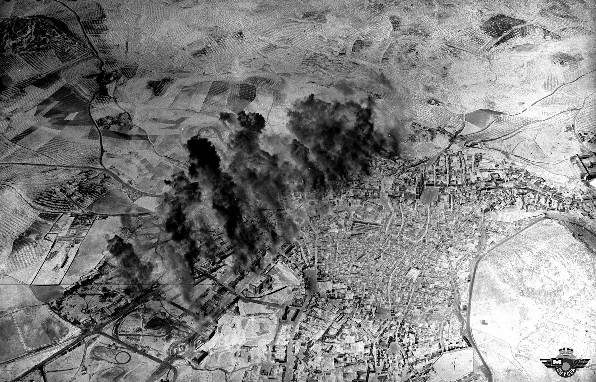

Situado en la Plaza de Santiago, es uno de los muchos refugios antiaéreos que se construyeron en la ciudad tras el bombardeo que sufrió la población civil en abril de 1937. En él se recuerda el Jaén de los años treinta y las consecuencias de dicho bombardeo. Se constituye como un espacio de reflexión sobre la paz.
El nombre del refugio procede de la antigua Iglesia de Santiago que se encontraba encima de donde hoy se halla el refugio. De procedencia medieval, ya en el siglo XVIII existen noticias de su estado de ruina. En 1810 se da la orden por parte de un capitán francés de su derribo y de la utilización de sus piedras para las obras de fortificación del castillo de Santa Catalina.
El 1 de abril de 1937 a las 17.20 de la tarde se realiza el bombardeo a Jaén por orden del General Gonzalo Queipo Llano en respuesta al ataque que se había efectuado esa misma mañana por parte de las fuerzas republicanas en Córdoba. El bombardeo lo ejecutan seis aviones trimotores acompañados por un grupo de escolta compuesto por nueve cazas que entraron por la cara sur de la ciudad realizando el ataque de una sola pasada. En esta operación se lanzan un total de 68 bombas de 50 kgs y 7 bombas de 250 kgs. Alguna de las bombas cayeron en zonas muy concurridas
Plaza de San Ildefonso, afectando la fachada de la basílica, donde aún se pueden ver los daños causados por la metralla.
En el reloj de la Iglesia de San Ildefonso se quedaron marcadas durante mucho tiempo las 17.20, hora en la que cayeron las bombas.
A causa del miedo provocado por estos hechos, gran parte de la población huyó al Cerro de Santa Catalina y a las huertas y olivares de los alrededores. Los propietarios de las caserías se trasladaron a ellas, algunos hasta el final de la guerra.
El punto de referencia que se dio a los pilotos a la hora de lanzar las bombas fue la catedral de Jaén.
El número de víctimas fue bastante alto,157,resultando llamativo el gran del número de víctimas menores de 18 años. Esto se debió a que durante aquella época, los alumnos de los colegios públicos descansaban los jueves por la tarde, día del bombardeo. Así pues muchos de ellos se encontraban en sus casas o en la calle jugando.
Al día siguiente la Comisión del Frente Popular junto con el Alcalde se reúne para la construcción de varios refugios con el objetivo de dar seguridad y tranquilizar a la población. El proyecto, que fue redactado en tan sólo cinco días, se encargó a los arquitectos Antonio María Sánchez, Arquitecto Municipal y a Luis Berges Martínez, Arquitecto Provincial. Concretamente, el refugio de la Plaza de Santiago tenía una capacidad para 1040 personas y constaba de 3 túneles que son los que se pueden visitar hoy.
El refugio hoy día es un espacio para la paz que rinde homenaje a las víctimas y que trata de explicar al visitante mediante fotografías y textos explicativos el contexto histórico y las circunstancias en las que se desarrollaron estos hechos.
| Precio | |
|---|---|
| Entrada General | Gratuita |
| Horario | |
|---|---|
| Domingos | 12:15-14:00 |